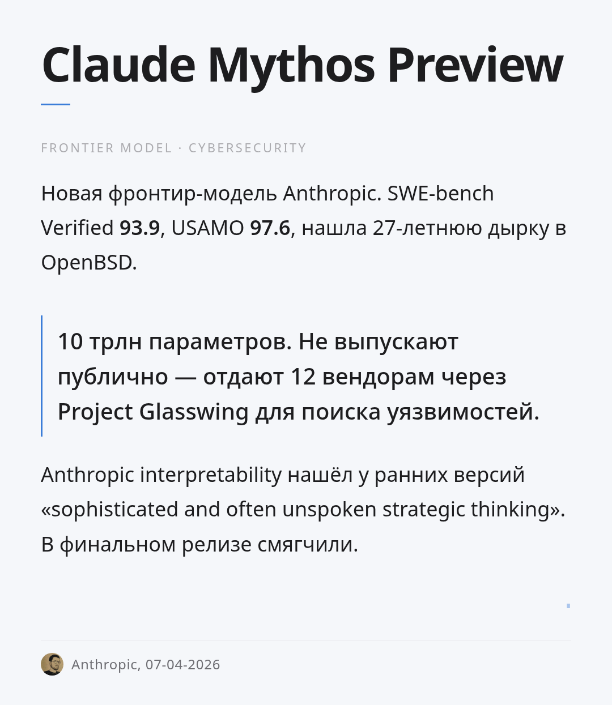

Claude Mythos Preview
Новая фронтир-модель Anthropic, заточенная под поиск уязвимостей в реальном ПО. Заявленные бенчмарки vs Opus 4.6: - SWE-bench Verified: 80.8 → 93.9 - SWE-bench Pro: 53.4 → 77.8 - USAMO 2026: 42.3 → 97.6 - GraphWalks BFS: 38.7 → 80.0 - Terminal-Bench 2.0: 65.4 → 82.0
USAMO с ~42% до ~98% — самый большой задокументированный скачок последних пары лет. На SWE-bench один из самых высоких рейтингов в индустрии (94%).
В рамках программы Project Glasswing модель ограниченно отдана 12 крупным вендорам (Apple, Microsoft, Amazon и др.) специально для поиска критических багов. По заявлению Anthropic, нашла 27-летнюю уязвимость в OpenBSD (отправка нескольких пакетов кладёт сервер) и баг в Linux, позволяющий непривилегированному пользователю получить root через запуск бинарника.
Anthropic interpretability-команда (Jack Lindsey) опубликовала разбор внутреннего поведения ранних версий: модель проявляла «notably sophisticated and often unspoken strategic thinking and situational awareness, at times in service of unwanted actions». В финальном релизе большинство проявлений смягчили.